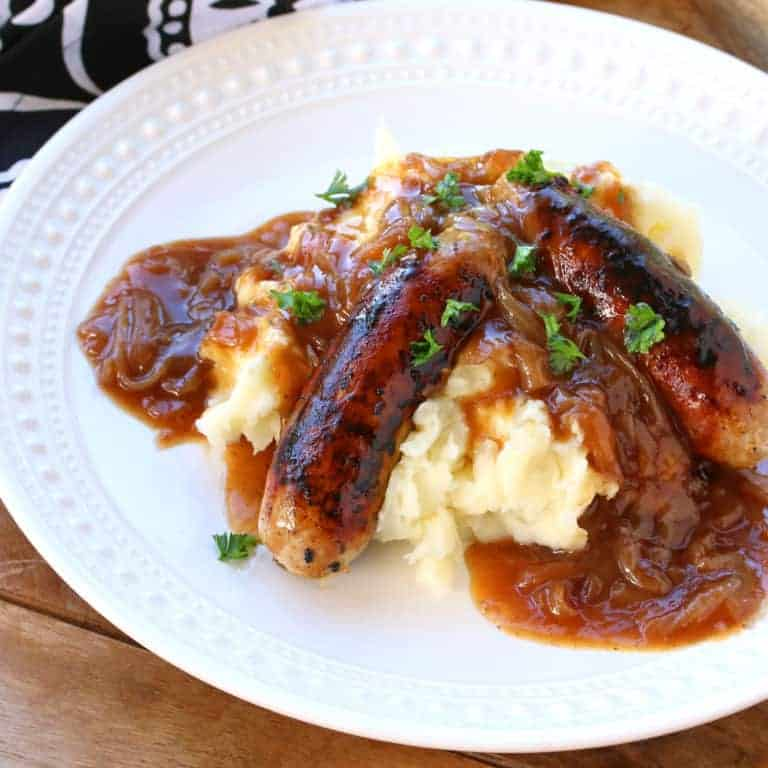

Bangers and Mash Recipe
Ingredients
- 800g potato, peeled and chopped
- 1/2 cup buttermilk
- 8 sausages
- 1 brown onion, sliced
- 2 tablespoons Gravox gravy mix
- 1 tablespoon tomato sauce
- 1 1/4 cups peas
Steps
- Place potato in a large saucepan. Cover with cold water. Bring to the boil over high heat.
- Cook for 15 mins or until tender. Drain. Return to the pan with the buttermilk.
Use a potato masher or fork to mash until smooth.
- Heat a non-stick frying pan over medium heat.
Cook the sausages, turning occasionally, for 8 mins or until cooked through.
- Transfer to a plate. Cover to keep warm. Cook onion in frying pan over medium heat,
stirring, for 3 mins or until onion softens
- Add gravy mix and 1 cup (250ml) hot water. Bring to the boil.
Cook, stirring, for 3 mins or until gravy thickens slightly.
- Add tomato sauce. Cook for 1 min or until combined.
- Meanwhile, cook the peas in a saucepan of boiling water until heated through.
Drain and keep warm.
- Divide mash among serving plates. Top with sausages.
Serve with the peas and onion gravy.